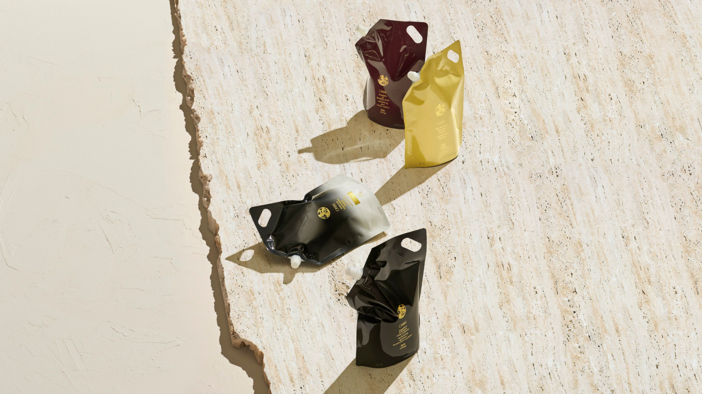

Lather,
Rinse,
Refill
At Oribe, we believe in big hair—and a small carbon footprint.
Proudly offering Liter Refills. As part of our continued commitment to sustainable packaging, we’ve created new refill pouches for our most popular liter-sized shampoos and conditioners and our luxurious hand wash.

Each pouch uses 71% less single-use plastic than our liter bottles.
We encourage you to join us on our journey to a more sustainable future by refilling and reusing our beautiful packaging.
We encourage you to join us on our journey to a more sustainable future by refilling and reusing our beautiful packaging.
Hair Alchemy
Resilience Shampoo & Conditioner
Reduce hair breakage and fortify strands from the inside out. Hair Alchemy Shampoo penetrates the hair cortex to build strength from within as it gently cleanses, while Hair Alchemy Conditioner creates a protective shield around strands and delivers a surge of moisture for smooth, strong, ultra-resilient hair.
Shop Now
Signature
Shampoo & Conditioner
Every morning should start with a little indulgence. Signature Shampoo is a rich daily cleanser that silkens, detangles and protects, while Signature Conditioner contains hydrating polymers that revive youthful shine for lustrous, healthy locks. Prepare your hair for glamour.
Shop Now
Shampoo & Conditioner for
Beautiful Color
Extend the bright, happy life of your dye. Shampoo for Beautiful Color’s high-tech ingredients target damaged areas for intense moisture, while Conditioner for Beautiful Color’s rich, restorative formula soothes over-processed color-treated hair with enhanced environmental protection to keep color-sapping UV rays at bay.
Shop Now
Côte d’Azur, Desertland & Valley of Flowers
Body Wash & Crème
Transport your senses with our signature fragrances in formulas to lather and smooth on. Our restorative, pearlescent body washes gently cleanse skin and add silky softness, while our indulgently rich body crèmes smooth, soften, and deliver the deepest hydration.
Shop Now
How to
Refill
1. First, remove bottle pump and set aside to use after the refill process. Leave any residual product inside the bottle - do not rinse or wash the bottle. Adding water or soap can introduce contaminants and affect the performance of the fresh product.
2. Open the refill pouch by removing the cap. Gently squeeze the pouch to avoid spillage, using the handle for greater control during filling. To fully evacuate the liter refill pouch, we suggest rolling the pouch up from the bottom as you refill your bottle, similar to rolling up a toothpaste tube. Always fill the same product into its original package, e.g. refill Gold Lust Repair & Restore Shampoo into a liter bottle already containing Gold Lust Repair & Restore Shampoo.
3. Be sure to leave ample headspace in the bottle to accommodate for product displaced by the pump.
4. Replace the pump on the bottle. Replace cap on the refill pouch or discard if empty.
Note: Any remaining product in the pouch can be used to refill your bottle in the future (up to 12 months from the initial opening).
Frequently Asked Questions
Yes, we are currently exploring refills/refillable options for additional Oribe products in the future.
A single liter refill pouch will refill one liter-size Oribe shampoo or conditioner bottle once (1x) or one Oribe Body Wash, Body Crème, or Hand Wash 3 and 1/3 times.
We prioritized creating refill pouches for our most in-demand and best-selling collections globally among both consumers (at retail) and within salons—targeting high-volume products to reduce potential waste on a larger scale.
The liter refill pouches were designed to be used as a system with your compatible, liter-size Oribe shampoo and conditioner or regular-size body wash, body crème, or hand wash. For the best user experience, we recommend using the Oribe liter-size bottle with a pump and your refill pouches as a more sustainable way to prolong the life of your beautiful Oribe liter bottles. Oribe’s product pumps deliver the optimal product dosage and are engineered for up to 10,000 uses. Currently, pumps are not recyclable, therefore we encourage you to reuse your pumps as many times as possible.
Oribe was mindful to reduce packaging for our liter refill pouches and eliminated the need for individual outer cartons (also known as secondary packaging). If you are purchasing the liter refills pouches from Oribe.com, you will receive the pouch by itself with no outer box/carton.
We recommend replacing your Oribe liter-size bottle approximately every 12 months, or as necessary (i.e. bottle/pump damage, etc.).
The liter refill pouches are made from a multi-layered film which is essential to protect the integrity of the product inside. Multi-layered film pouches are not yet able to be recycled widely; at present, only about 20% of Americans can recycle this type of material.* As a result of this, the new liter refill pouches are not recyclable. We are actively researching and testing alternative pouch materials that can both maintain the integrity of the product inside and are also recyclable, or contain recycled content, in an effort to continue to improve our environmental impact.
As part of our larger commitment to sustainability, we are always looking for ways to evolve our packaging to make it more environmentally friendly. Our new liter refill pouches are a forward step in this journey. The pouches use 71% less single-use plastic than our current liter bottles, reduced carbon emissions in transport due to the compact format of the pouches and localized manufacturing, and reduced material into the waste stream.
*Based on information sourced from Howtorecycle.info
As part of our larger commitment to sustainability, we are always looking for ways to evolve our packaging to make it more environmentally friendly. Our new liter refill pouches are a forward step in this journey. The pouches use 71% less single-use plastic than our current liter bottles, reduced carbon emissions in transport due to the compact format of the pouches and localized manufacturing, and reduced material into the waste stream.
*Based on information sourced from Howtorecycle.info
At Oribe, we know that every detail makes a world of difference. We're committed to finding new ways to consciously craft our products and create a more luxuriously sustainable experience for all. That’s why we are innovating new materials and new approaches, harnessing our creativity for better luxury packaging, more mindful formulations, lower carbon emissions, and greater diversity, equity, and inclusion.
Learn more about what we've achieved and our future goals.
Learn more about what we've achieved and our future goals.